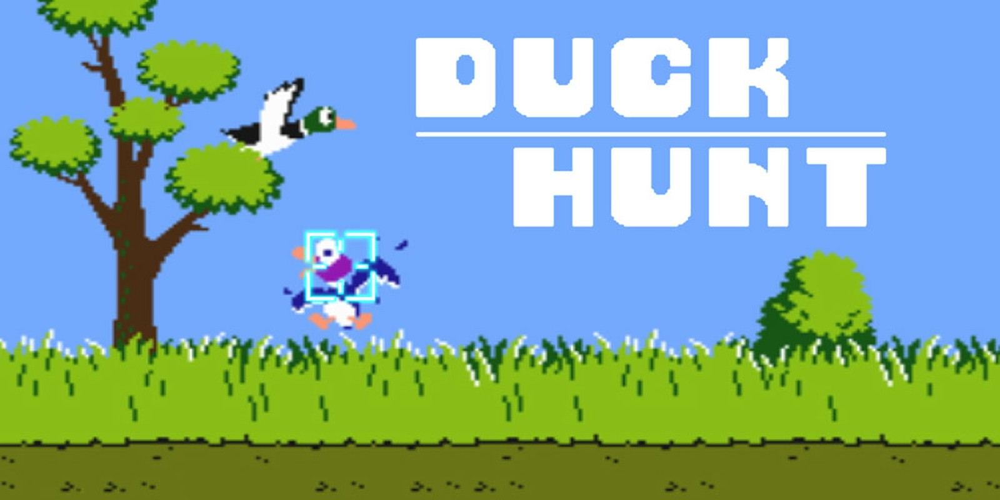
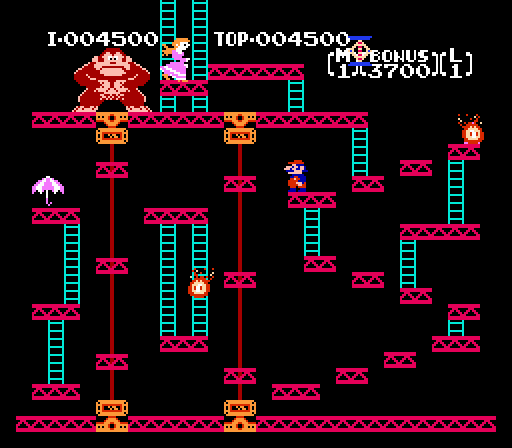

Games
Super Mario Bros.
- Relased: 1985
- Sales: 40.24 million
- Rating: 10/10
- Genere: Platformer
This is the game that started it off. The video game market was crashing but when Nintendo released this game it almost singlehandedly save video games. It is not easy and doesn't let you win without trying. If you lose all of your lives you have to restart the game from the beginning. The game seems old and basic but you can find secret warp pipes that lead you to different worlds. The fire flower and the super star are two items featured in the game. The game was the first Mario game for the NES and started the whole Mario franchise we know and love today.
Legend of Zelda
- Relased: July 1987
- Sales: 6.5 million
- Rating: 9/10
- Genere: Action-adventure
THE Legend of Zelda was the game that defined the action-adventure gaming genera. It was one of the first true adventure video game that featured a large map, many dungeons, and multiple combat techniques. This game is quite challenging and complex, especially for being on the NES. In fact, Nintendo had to design a special game cartridge so players could save their games, just to give people a change at beating the game. This game has many secrets and interesting puzzles that still make the game an enjoyable and interesting title by today's standards.
Duck Hunt

- Relased: October 18, 1985
- Sales:
- Rating: 8/10
- Genere: Light gun shooter, Sports
In a world dominated by first person shooters, duck hunt seems almost like a joke. IT IS NOT. This game, while super-simple, has a lot of character, especially the funny dog that laughs at you (because you are bad). The game demonstrates that sometimes you don't need a complicated game with advanced mechanics and ultra-realistic graphics to be fun. Also, the technology behind the game is kind of an interesting idea (and it does not work on modern TVs).
Donkey Kong

- Relased: June 1, 1986
- Sales:
- Rating: 9.5/10
- Genere: Platformer
Donkey Kong, originally released in the arcades, was the video game that got Nintendo into the market. This game, like most of the games at the time, is simple with its controls and game-play. The real appeal of it is its nostalgic value as the first major title that Nintendo released. For those who have not seen the game before, the player controls “Jump-man” in his quest to save his girlfriend from the clucks of DK. To make it to his Lady, Jump-man must clime up a series of red girders, while avoiding barrels and other hazards thrown by the ape. All in all a great game that takes players back to the start of an a great revolution in video games.